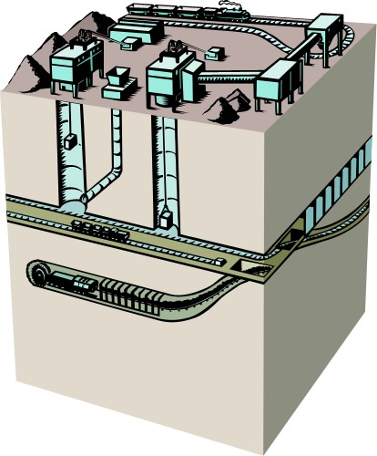
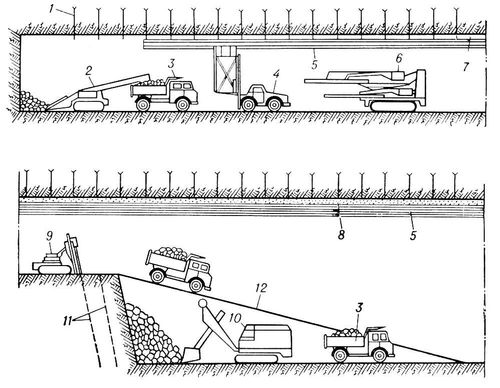
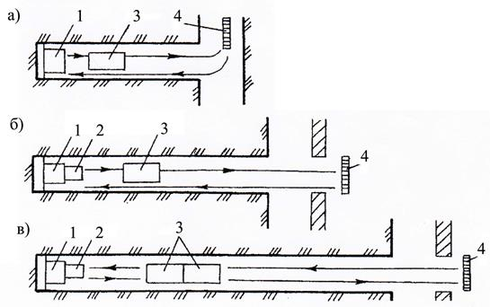
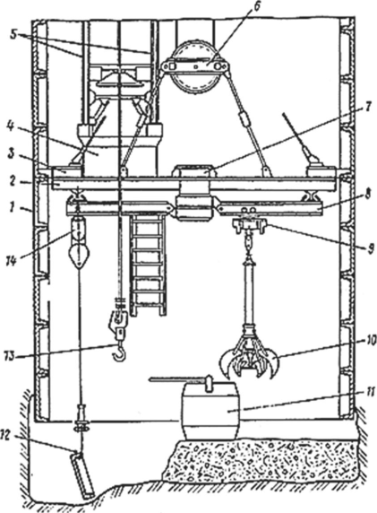

|  | Подземные горные работы- это способ добычи полезных ископаемых в недрах Земли путём проведения системы подземных горных выработок без нарушения дневной поверхности Подземные горные работы велись ещё в глубокой древности. В настоящее время, несмотря на преобладание открытого способа добычи полезных ископаемых в мире, роль подземного способа добычи в обеспечении сырьём остаётся значительной. |
Подземные горные работы |
||||
Рис.1 - Проходка горных выработок |
Рис.2 - Способы проветривания тупикового забоя |
Рис.3 - Проходка вертикальных горных выработок |
||||
|
|
Ссылка на урок 1.3 |